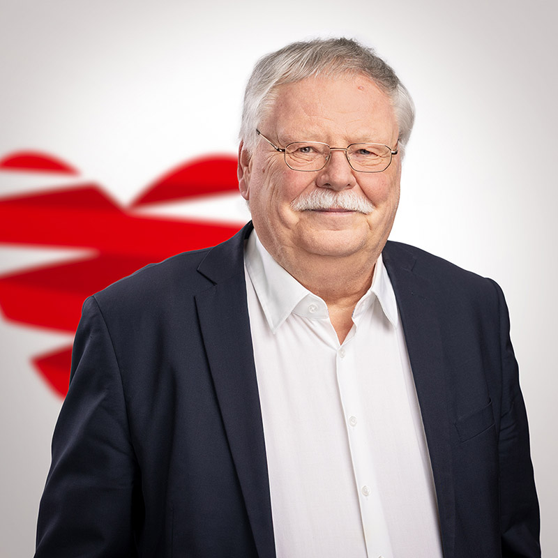

Trägerverein
Der Caritas Altenheim Furtwangen e.V. (C.A.F.)
Der C.A.F. wurde 1968 gegründet. Bis dahin mussten in Not geratene, pflegebedürftige Menschen in weit entfernte Einrichtungen umsiedeln. So war für den C.A.F. von Beginn an das Ziel, ein Alten- und Altenpflegeheim zu errichten und zu betreiben. Es sollte vor allem für die älter werdenden Mitglieder der Katholischen Kirchengemeinde Vorsorge getroffen werden.
Die Vollversammlung des Vereins wählt aus ihrer Mitte den Vorstand, der zur Zeit aus zwei Mitgliedern besteht:
Die Vollversammlung des Vereins wählt aus ihrer Mitte den Vorstand, der zur Zeit aus zwei Mitgliedern besteht:

Trägerverein
Pfarrer Harald Bethäuser
1. Vorstand
Dr. Götz Besenfelder
Stellv. Vorstand
Birgit Wild
Beisitzerin
Matthias Hall
Kassier
Kontrollgremium Aufsichtsrat
Rainer Lübbers
Aufsichtsratsvorsitzender
Isolde Grieshaber
Aufsichtsrat/Schriftführerin
Franz Sauter
Aufsichtsrat

Prof. Manfred Kühne
Aufsichtsrat
Konrad Baier
Aufsichtsrat
Der Vorstand nimmt die Verantwortung der Vereinsführung und Trägerarbeit wahr. Die Vereinsführung ist im Wesentlichen die Einberufung der jährlichen Vereinsversammlung, die Rechenschaftslegung zum Vereinsvermögen und die Darlegung zukünftig anzusteuernder Ziele. Der Aufsichtsrat ist Kontrollorgan des Vorstandes.
Zur Trägerarbeit gehören die engen Kontakte zur Einrichtungsleitung, der Vergleich der Kennzahlen zu einer wirtschaftlichen Betriebsführung, die Beratung der Einrichtungsleitung in schwierigen Entscheidungen.
Haben Sie Interesse an einer Mitgliedschaft im Trägerverein? Dann wenden Sie sich gerne an Birgit Wild.
Hier geht es zur Beitrittserklärung Caritas Altenheim Furtwangen e.V.